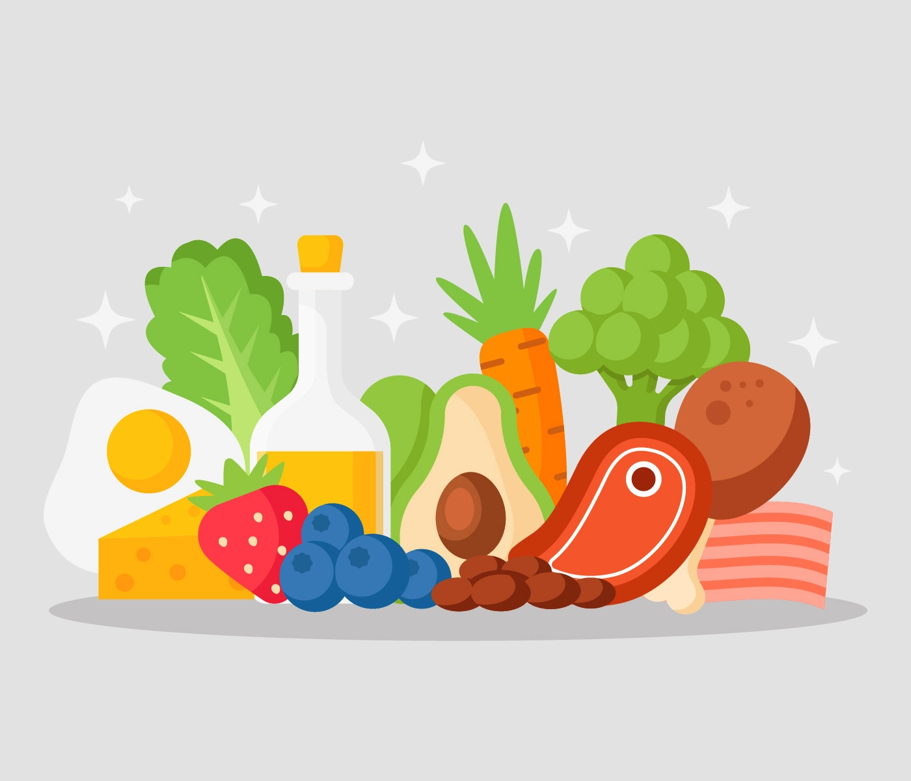

Pure And Fresh

Our products are very fresh and pure as we directly connect you with the original suppliers.
Frequently Asked Questions (FAQs)
Q: How are the fruits and vegetables packaged?
A: Fresh fruits and vegetables are hand picked and hand cleaned. We ensure hygienic and careful handling of all our products.
Q: How are the fruits and vegetables weighed?
A: Every fruit and vegetable varies a little in size and weight. While you shop we show an estimated weight and price for everything priced by kilogram. At the time of delivery we weigh each item to determine final price. This could vary by a maximum of one unit weight depending on the article. In case the weight of the product is lesser than what you ordered, you will pay correspondingly less.
Q: Do you offer organic ingredients?
A: Some, but not all, of our ingredients are organic. While the majority of our products are not organic, what we do concentrate on is what produce looks, taste, safety and hygiene.
Q: How does my food stay fresh in transit?
A: We have specially designed boxes with insulated liners and cooling gel packs that are modified seasonally to ensure optimal freshness in transit. Once you receive your box, please make sure to unpack the ingredients and refrigerate all items immediately.
Q: How long will my ingredients stay fresh?
A: To ensure your ingredients stay at the peak of freshness in which they were packed, we recommend storing all items at the prescribed temperatures on them.
Q: Where do you source your products from?
A: Our products are directly sourced from the factories and warehouses in case of packed items. While, for the fresh items we rely on the local market.
Q: What guarantees freshness for the products ordered?
A: Bocfresh strives to deliver the products that are fresh and systems are kept in place to source the best products and safely consign them to you. We don't stock the products but place once we receive orders.
Q: What about packing?
A: Packing is our extreme concern. We take all steps to have your products delivered in a perfect and hygienic condition without any damage or rotting.
Back